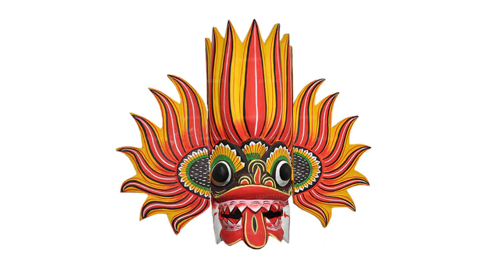
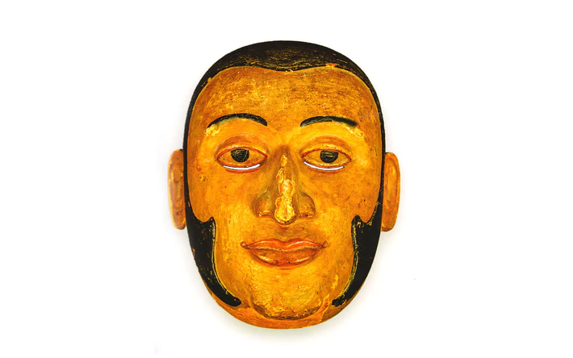
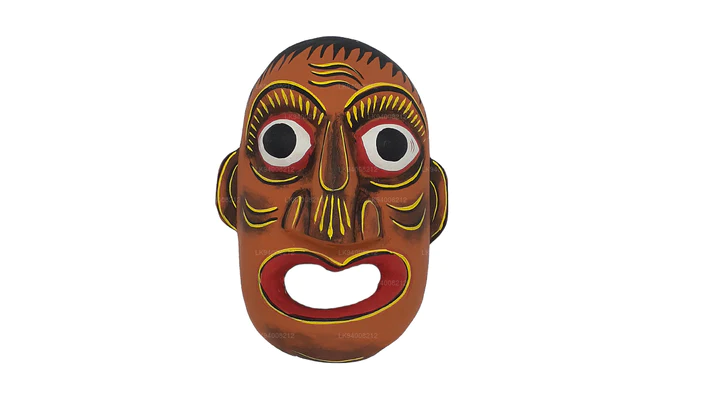

Welcome to Serendib Masks.
Sri Lankan traditional masks are an important part of the country's rich cultural heritage. These masks are used in various traditional dances, rituals, and ceremonies, and are believed to have originated from ancient beliefs and practices. The masks are usually made from wood and are intricately carved and painted with vibrant colors and designs, depicting various characters from Sri Lankan folklore and mythology. Some of the most popular characters include demons, gods, animals, and legendary figures. The masks are believed to have both spiritual and medicinal properties, and are used for healing, exorcism, and to ward off evil spirits. Today, traditional mask-making is still practiced in Sri Lanka, and these masks are considered a valuable form of art and cultural expression.
| Type | Info |
| Raksha |
A Raksha mask is a mask that Sri Lankans use a lot in festivals
and cultural dances. Raksha means “demon” and the masks are
apotropaic which means that it is intended to ward off evil. They
are painted in vibrant colors, with bulging eyes and protruding
tongues and they depict various types of demons Find Out More... |
| Kolam |
Kolam is another “low-country” tradition from Sri Lanka’s southern
coast. Although it includes elements of ritual and even trance, it
may be classified, however, as a form of folk theatre. A loose
plot binds several stock characters and scenes together. The
actual play is usually based on a Buddhist Jataka story.
Find Out More... |
| Sanni |
The sanni masks are mainly used in healing ceremonies and worn by
an edura (a sort of Sri Lankan artist/exorcist). Apparently, there
are eighteen different Sanni masks, each specializing in curing
specific illnesses. Find Out More... |
Raksha dance is a traditional Sri Lankan folk dance that is popular in the southern part of the country. The dance is believed to have originated as a ritual to ward off evil spirits and is performed during the Sinhala and Tamil New Year as well as other cultural festivals. The performers move in a circular pattern while creating rhythmic beats with their feet and clapping their hands.
Our vision is to preserve and promote the rich cultural heritage of Sri
Lanka through the art of mask-making. We aim to become the leading
producer of high-quality, authentic Sri Lankan masks, both within the
country and on the global stage.
We envision a world where the ancient art of Sri Lankan mask-making is
widely recognized and appreciated for its unique cultural and artistic
value. We strive to create a market for our masks that is not just
limited to the local community, but reaches out to people from different
parts of the world who are interested in experiencing the beauty and
significance of Sri Lankan culture.
In addition, we also envision ourselves as an organization that is
committed to the sustainability of the art form and the livelihoods of
the artisans who create the masks. We believe in using sustainable and
environmentally friendly materials in our production process and
ensuring that our artisans receive fair compensation for their skills
and labor.
Overall, our vision is to promote the beauty and significance of Sri
Lankan culture through the art of mask-making, while also preserving and
promoting this ancient art form for future generations to appreciate and
enjoy.